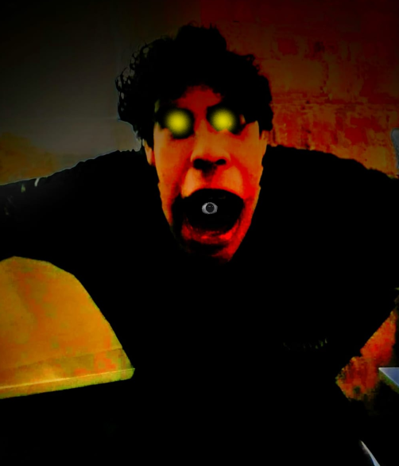
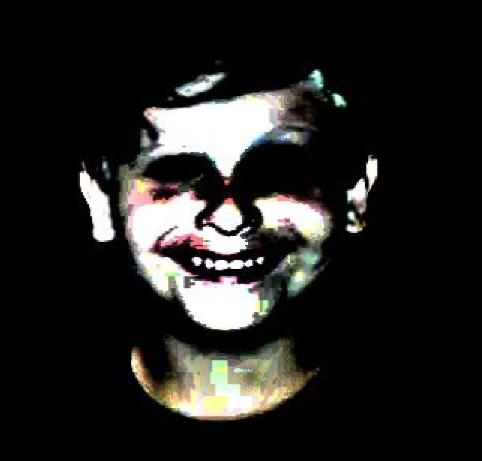

Jengus Babilonicus: Um ser malígno e muito perigoso encontrado na península antártida. É dito que seu QI é incalculável de tão alto. Suas origens são incertas, mas parece que seus avistamentos datam desde o século 14. Classe de risco: A-
Nicolus Romenus: Criatura diabólica que mede 4 metros e 2 centímetros (para todos os lados). Foi encontrado nas profundezas das ruínas das catacumbas de São Paulo. É extremamente agressivo e poderoso Classe de risco: A
Lukus Tanatos: Monstro supremo avistado nas florestas nevadas do leste da Polônia. Toda e qualquer tentativa de captura ou contenção foi fútil. o ser é extremamente poderoso e possui habilidades dignas de um deus. A última tentativa de captura resultou em [INFORMAÇÃO RETIRADA PELA ORGANIZAÇÃO] Classe de risco: S+